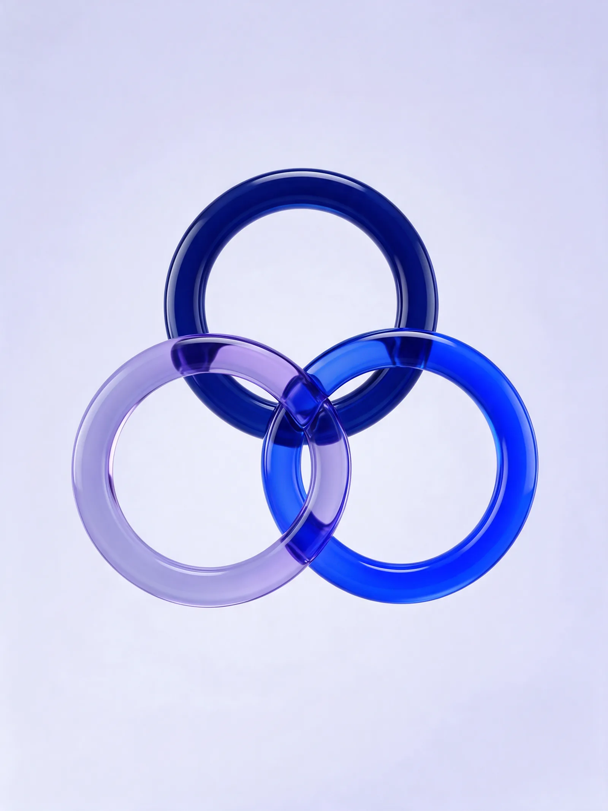

▤
12.4 billionprimary care records
●
184 millionactive patients
✓
27 statesall of Brazil in the database
Real-world evidence
Studies using everyday SUS data to support public policy and clinical decisions.
From the community health worker's home visit to scientific evidence: we turn Brazilian primary care into data that cares.
Source: medRxiv, 2026 — SISAB data, 2013 to 2026.
Published and presented in


Science, technology and campaigns that start in the same place: everyday care in Brazil's public health system (SUS).
Real-world evidence
Studies using everyday SUS data to support public policy and clinical decisions.
Digital clinical trials
From recruitment to close-out, with queries and SDV right on the phone.
Disease awareness campaigns
Nationwide digital communication on vaccines, rare diseases, breast cancer and more.
1,465
Patients in SAPPHIRE-LDL
Trial across 28 clinics, published in JAMA Cardiology (2026).
Ethics
Studies approved by ethics committees and registered on ClinicalTrials.gov.
Science
Results published in international journals.
Five complementary services — from study design to data capture, from nationwide campaigns to consulting.



The community health worker records the visit on a tablet, in each family's home.

Municipal databases corrected and updated with digital support, with no rework.

Hypertension and diabetes closely monitored, including at home.

Real-world data that becomes studies, publications and health decisions.

Wherever public health happens, technology needs to get there. Real photos of teams in the field.


Patient, investigator, monitor and coordinating center connected in real time — the platform used in the SAPPHIRE-LDL trial, with 1,465 patients across 28 clinics.
A personal health summary, like the latest LDL on a gauge, chat with the study team and eConsent on the phone.

Every eCRF field checked against the source document and marked during the visit.

A discrepancy becomes a query on the field itself, with answer and history in one place.

Enrollment, completed visits and pending items per site, in real time.

Scientific output with international reach and public health impact.

Registered on ClinicalTrials.gov and approved by Brazil's research ethics system.

CLEAR-HTN
15,000planned participants
Hypertension treatment patterns in public primary care. Observational.
View on ClinicalTrials.govSAPPHIRE-LDL
1,465patients across 28 clinics
Digital intervention for LDL control. Cluster randomized trial.
View on ClinicalTrials.govRWE-Statins
2.1 millionparticipants (2,133,900)
Real-world evidence on statin use in Brazil.
View on ClinicalTrials.gov| epCertify Hiperdia | Hypertension and diabetes · Hospital Moinhos de Vento | 16/12/2025 |
| COVID-19 ACS Brasil | Respiratory symptom screening by community health workers · Hospital Israelita Albert Einstein | 28/09/2022 |
| AVC ACS Brasil | Profile of stroke patients and access to rehabilitation in the Family Health Strategy · Hospital Israelita Albert Einstein | 23/05/2022 |
| ICHealth | Profile of heart failure patients cared for by the Family Health Strategy | 13/10/2020 |
| DPOC ACS Brasil | Profile of COPD patients cared for by the Family Health Strategy · Hospital Israelita Albert Einstein | 30/04/2020 |
Approval can be verified at plataformabrasil.saude.gov.br (Público › Confirmar aprovação, using the CAAE or opinion number).

National reports built from public SUS data — from viral hepatitis testing to 12 years of primary care output.


University of Cambridge

European Society of Cardiology Congress

American Cardiology Congress
It comes from studies that use everyday care data — such as primary care records — rather than controlled settings alone. It helps support public policy, clinical decisions and health strategies.
Yes. Our studies are approved by Brazil's CEP/CONEP system, and our clinical trials are registered on ClinicalTrials.gov.
It is our clinical research platform: it connects patients, participating sites and the coordinating center, with eCRF, SDV, queries, eConsent and chat on the phone.
epHealth is the technology and research company. Instituto epHealth is the nonprofit organization that works in public health.
Write to us using the form below or at info@ephealth.com.br. Our team replies within 2 business days.
Tell us what you need. Our research, technology and public health team replies within 2 business days.